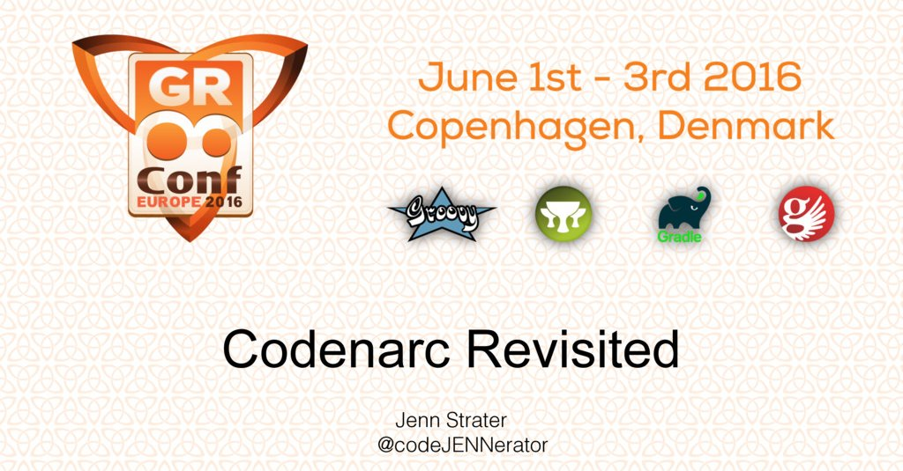
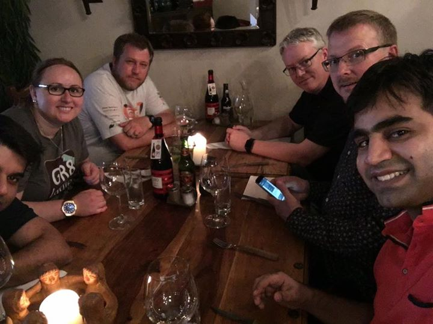
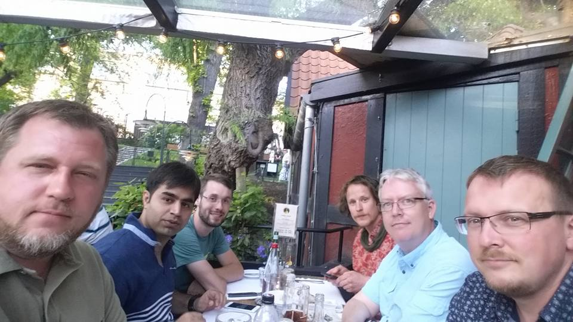

GR8Conf.eu 2016 Wrapup!
Created by Ryan Vanderwerf / @RyanVanderwerf - OCI
About Me
- Software Engineer on Grails team at OCI (New home to Grails)
- Father of 2 girls under 12
- Co-Chair Austin Groovy and Grails User Group
- Co-Author of Effective Gradle Implementation Video Series on Packt
- I like to modify all the things (cars, home automation, phones, gadgets)
- Into lots of Devops/Linux stuff and AWS
The conference
- What is Alexa and what devices it covers
- Day 1: University Day
- Day 2: Conference Day 1
- Day 3: Conference Day 2
- Post Conf: Speaker fun day!
University Day
Getting Groovy with Lego Mindstorms EV3 (me)
We got familar with the lejos API and built and pushed robot Groovy code to the robots. After that we used the Ev3Rover Grails app to remote control the robots from our PCs and phones.
Rest With Grails 3 (Jeff Scott Brown)
Attendees got together and learned the ins and outs of building REST APIs with Grails3. They learned the @Resource annotation, RestFul controllers, and writing functional tests. He also showed how to build custom renderers, and the new json-views API to customize views.
Creating Applications with Grails, AngularJS and Spring Security (Alvaro Sanchez-Mariscals)
This session demonstrates the Grails 3.1 improved profile system. We created a back-end using Grails 3 REST API, front-end using Grails AngularJS profile and used spring-security-rest for securing REST API. (ripped from toTheNew blog)
Gradle Workshop (Andres Almiray)
Andres started the session explaining the basics of Gradle, how it works, the tasks, dependencies,… and at the end we even created a plugin! It was a really nice workshop and I learnt a lot things about Gradle. (ripped from Ivan Lopez blog)
Groovy and Spock for Beginners (Jacob Mikkelsen)
Jacob gave a great workshop on the basics of Spock and Groovy. Material is at http://bit.ly/1TJL56x
Hackergarten on Tour (Andres Almiray)

Andres Almiray led the Hackergarten this year again. His energy is very good and high which helps get people motivated for some open source contibutions. Lots was done, I think several Spock issues merged, progress on Elastic Search 2 plugin for Grails 3, fixes for lazybones templates on Android Wear. One thing that will be good for Grails got lots of progress on a converter for the old gdoc format to ascii doctor here! Also a new Gradle Groovydoc plugin that forks the jvm here.
Conference Day 1
Keynote with Ken Kousen
Funny tweets
- #gr8conf #keynote "They are stupidheads" On #Pivotal dumping groovy
- @kenkousen taking pot shots at Swing during his #gr8conf keynote. shots fired!
- And swing is still the butt of jokes at jvm conferences #gr8conf had to stop @aalmiray going to the hulk mode next to me
- "I'm not an authority" Kotlin Ken 2016 #gr8conf
‘A Groovy journey in open source land’ by Guillaume Laforge
Guillaume talked about the history of Groovy, it's progress, and where it's headed (it's bright!)
Slides at http://bit.ly/28Kb1yX
‘Monitoring and Metrics in Grails3’ by Jeff Scott Brown
Jeff shows the Dropwizard-metrics plugin, JMeter, and JMX Services available in Grails 3
Slides at http://bit.ly/28KbukK
‘Groovy Powered Clean Code’ by Noame Tenne
Noam gave great tips on writing clean code in Groovy that will make it easier to refactor and code review with peers later.
Slides at http://bit.ly/28KwiLf
‘Future of Groovy’ (panel)
It was a frank upbeat discussion starting out with ribbing Gradle on Kotlin of course, then talking about what can be done to help drive Groovy adoption forward. Again the Eclipse support bubbled to the top again. Average Joe it seems misses the support in Eclipse and is lost without it.
‘Nooks and Crannies of Spock’ (Marcin Zajączkowski)
Marcin gave a great deep dive into things you may have not known about Spock framework that would be useful.
Slides at http://bit.ly/28KwiLf
‘The GR8 Road to #fame’ (Himanshu Seth)
@hseth showed his his live streaming platform build on on grails.
More at http://gr8conf.eu/#/talk/308
Ask the Grails Experts (OCI Team)
OCI Team held an open forum answering common questions about Grails
Android and Gradle (Ken Kousen)
Ken Kousen gave his talk about getting familar with Gradle while building Android apps
Groovy Gateway Drug (Jacob Mikkelsen)
Jacob showed us some ways he's used tools of the ecosystem to hook people on Groovy
Slides at http://bit.ly/28Kt6kJ
Hands On Migration from Grails 2 to 3 (Michael Plöd)
Michel shared his experiences on upgrading Grails 2 apps to Grails 3
Slides at http://bit.ly/28KtjEl
Dockerizing Your Grails App (Mario David)
Mario shared his experiences Dockerizing his company's Grails App
Slides at http://bit.ly/28KAcXk
Scraping With Geb (Sergio Del Amo)
Sergio shared how to use Geb to scrape web pages
Slides at http://bit.ly/28K8R3F
Groovy Puzzlers with Gr8 Beer! (Noam Tenne and Baruch Sadogursky)
Groovy Puzzlers with Gr8 Beer! (Noam Tenne and Baruch Sadogursky)
Conference Day 2! - Mastering Grails 3 Plugins (Alvaro Sanchez-Mariscal)
Alvaro talked about the ins and outs of making Grails 3 plugins
Slides at http://bit.ly/28M7jYy
Codenarc Revisited (Jennifer Strater)
Jennifer talked about using CodeNARC to keep your code in shape.
Slides at http://bit.ly/28JkK9B
Graphics and UI Design (Alexander Sasha Klein)
Sasha talked about good UI and graphics design in your application.
Slides at http://bit.ly/28JPo1h
GORM Deep Dive (Grame Rocher)
Grame shows the history of GORM and some new cool stuff about GORM 5 and Rx-Gorm.
Slides at http://bit.ly/28Kzl5W
Mum, I want to be a Groovy Full Stack Developer (Iván López)
Ivan gives a soup to nuts examples of building a Full Stack Groovy app with examples!
Slides at http://bit.ly/28Jltrc
Rapid Rackpack Development (Danny Hyun)
Danny gives a good talk on how to build Ratpack Apps quickly.
Slides at http://bit.ly/28L87hT
Alexa, tell me I'm Groovy! (Ryan Vanderwerf)
I give my Alexa talk on Amazon Echo and friends, using Groovy Lambda and Grails Apps (More next meeting!)
Slides at http://bit.ly/28Lh0Gi
Variant Aware Dependency Management in Gradle (Cédric Champeau)
Cedrik shows how to handle variants in Gradle, important especially to native building.
Slides at http://bit.ly/28KA6vS
Migrating Plugins From Grails 2 to 3 for The Community (Puneet Behl)
sPuneet shows how to help out the community by helping migrate plugins from Grails 2 to 3. His company ToTheNew has helped migrate many plugins to Grails 3.
Slides at http://bit.ly/28JlDPti
Building A Conference App In Grails, Android, and Wordpress (Sergio De Amo)
Sergio shows a clever way he build an Android app for Greach using Groovy, Android, and Wordpress together.
Slides at http://bit.ly/28JWcv9
A Test Driven Approach to Documenting RESTful APIs (Jennifer Strater)
Jennifer shows how to build APIs in Grails using a TDD approach.
Slides at http://bit.ly/28MaZti
Using Groovy with Jenkins (Alexander Sacha Klein)
Sasha talks about using Groovy to the maximum on Jenkins.
Slides at http://bit.ly/28Kz0lC
Testing in Grails 3 (Jeff Scott Brown)
Jeff shows us how it's done when writing tests for your Grails 3 apps.
Slides at http://bit.ly/28Jmik5
Dockerizing Your Rackpack App (Noame Tenne)
Noame shows us how to dockerize the deployment if your Ratpack app.
Slides at http://bit.ly/28KFh1s
Speaker Dinner
We get together for some Mexican food (ha!) in Denmark
Fun Day! - Segway
The speakers head out on a Segway tour in Copenhagen. They are easier than I thought to drive!
Fun Day! - Tivoli Gardens
Lastly we head to Tivoli Gardens with the last energy we have. Thanks Gr8Conf!
THE END 
I hope you have enjoyed the session!
Free free to contact me on twitter or google+ @RyanVanderwerf or email rvanderwerf@gmail.com